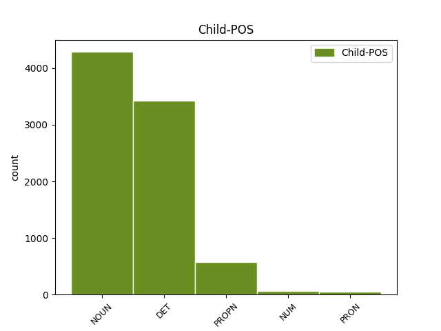

Distribution of features within this leaf

Agreement Rules sorted by frequency.
- When the dependent token is the conjunct(conj) of the head token, and the dependent token is NOUN.
1 Takie _ _ _ _ 0 _ _ _
2 połączenie _ _ _ _ 0 _ _ _
3 leków _ _ _ _ 0 _ _ _
4 może _ _ _ _ 0 _ _ _
5 powodować _ _ _ _ 0 _ _ _
6 wzrost wzrost NOUN subst:sg:acc:m3 Animacy=Inan|Case=Acc|Gender=Masc|Number=Sing 0 _ _ _
7 stężenia _ _ _ _ 0 _ _ _
8 karbamazepiny _ _ _ _ 0 _ _ _
9 w _ _ _ _ 0 _ _ _
10 osoczu _ _ _ _ 0 _ _ _
11 i _ _ _ _ 0 _ _ _
12 zmniejszenie zmniejszyć NOUN ger:sg:acc:n:perf:aff Aspect=Perf|Case=Acc|Gender=Neut|Number=Sing|Polarity=Pos|VerbForm=Vnoun 6 conj _ _
13 stężenia _ _ _ _ 0 _ _ _
14 lanzoprazolu _ _ _ _ 0 _ _ _
15 . _ _ _ _ 0 _ _ _
1 Wszyscy _ _ _ _ 0 _ _ _
2 podzielamy _ _ _ _ 0 _ _ _
3 tę ten DET adj:sg:acc:f:pos Case=Acc|Gender=Fem|Number=Sing|PronType=Dem 5 det _ _
4 samą _ _ _ _ 0 _ _ _
5 ideę idea NOUN subst:sg:acc:f Case=Acc|Gender=Fem|Number=Sing 0 _ _ _
6 : _ _ _ _ 0 _ _ _
7 mamy _ _ _ _ 0 _ _ _
8 swobodę _ _ _ _ 0 _ _ _
9 przepływu _ _ _ _ 0 _ _ _
10 orzeczeń _ _ _ _ 0 _ _ _
11 sądowych _ _ _ _ 0 _ _ _
12 . _ _ _ _ 0 _ _ _
1 Podpodział _ _ _ _ 0 _ _ _
2 systemu _ _ _ _ 0 _ _ _
3 VAT _ _ _ _ 0 _ _ _
4 ( _ _ _ _ 0 _ _ _
5 tylko _ _ _ _ 0 _ _ _
6 Hiszpania _ _ _ _ 0 _ _ _
7 , _ _ _ _ 0 _ _ _
8 Francja Francja PROPN subst:sg:nom:f Case=Nom|Gender=Fem|Number=Sing 0 _ _ _
9 i _ _ _ _ 0 _ _ _
10 Włochy Włochy PROPN subst:pl:nom:n:pt Case=Nom|Gender=Neut|Number=Ptan 8 conj _ SpaceAfter=No
11 ) _ _ _ _ 0 _ _ _
1 Przenieść _ _ _ _ 0 _ _ _
2 ilościowo _ _ _ _ 0 _ _ _
3 do _ _ _ _ 0 _ _ _
4 kolby _ _ _ _ 0 _ _ _
5 pomiarowej _ _ _ _ 0 _ _ _
6 o _ _ _ _ 0 _ _ _
7 pojemnosci _ _ _ _ 0 _ _ _
8 250 250 NUM num:pl:gen:m3:congr Animacy=Inan|Case=Gen|Gender=Masc|Number=Plur|NumForm=Digit|NumType=Card 0 _ _ _
9 lub _ _ _ _ 0 _ _ _
10 500 500 NUM num:pl:gen:m3:congr Animacy=Inan|Case=Gen|Gender=Masc|Number=Plur|NumForm=Digit|NumType=Card 8 conj _ _
11 ml _ _ _ _ 0 _ _ _
12 ( _ _ _ _ 0 _ _ _
13 patrz _ _ _ _ 0 _ _ _
14 tabela _ _ _ _ 0 _ _ _
15 ) _ _ _ _ 0 _ _ _
16 . _ _ _ _ 0 _ _ _
1 Kurwa _ _ _ _ 0 _ _ _
2 , _ _ _ _ 0 _ _ _
3 przyniosł _ _ _ _ 0 _ _ _
4 em _ _ _ _ 0 _ _ _
5 alkohol alkohol NOUN subst:sg:acc:m3 Animacy=Inan|Case=Acc|Gender=Masc|Number=Sing 0 _ _ _
6 i _ _ _ _ 0 _ _ _
7 wszystko wszystko PRON subst:sg:acc:n:ncol Case=Acc|Gender=Neut|Number=Sing|PronType=Tot 5 conj _ SpaceAfter=No
8 . _ _ _ _ 0 _ _ _
1 Chcą _ _ _ _ 0 _ _ _
2 mnie ja PRON ppron12:sg:acc:m1:pri:akc Animacy=Hum|Case=Acc|Gender=Masc|Number=Sing|Person=1|PronType=Prs|Variant=Long 0 _ _ _
3 i _ _ _ _ 0 _ _ _
4 każdego każdy DET adj:sg:acc:m1:pos Animacy=Hum|Case=Acc|Gender=Masc|Number=Sing|PronType=Tot 2 conj _ SpaceAfter=No
5 , _ _ _ _ 0 _ _ _
6 kto _ _ _ _ 0 _ _ _
7 jest _ _ _ _ 0 _ _ _
8 ze _ _ _ _ 0 _ _ _
9 mną _ _ _ _ 0 _ _ _
10 . _ _ _ _ 0 _ _ _
Disagree Examples:
1 Kobieta kobieta NOUN subst:sg:nom:f Case=Nom|Gender=Fem|Number=Sing 0 _ _ _
2 i _ _ _ _ 0 _ _ _
3 dwóch _ _ _ _ 0 _ _ _
4 mężczyzn mężczyzna NOUN subst:pl:gen:m1 Animacy=Hum|Case=Gen|Gender=Masc|Number=Plur 1 conj _ SpaceAfter=No
5 , _ _ _ _ 0 _ _ _
6 jeden _ _ _ _ 0 _ _ _
7 w _ _ _ _ 0 _ _ _
8 ciemnych _ _ _ _ 0 _ _ _
9 okularach _ _ _ _ 0 _ _ _
10 , _ _ _ _ 0 _ _ _
11 pozują _ _ _ _ 0 _ _ _
12 do _ _ _ _ 0 _ _ _
13 zdjęcia _ _ _ _ 0 _ _ _
14 . _ _ _ _ 0 _ _ _
1 Pięć _ _ _ _ 0 _ _ _
2 dziewczyn dziewczyna NOUN subst:pl:gen:f Case=Gen|Gender=Fem|Number=Plur 0 _ _ _
3 w _ _ _ _ 0 _ _ _
4 kombinezonach _ _ _ _ 0 _ _ _
5 i _ _ _ _ 0 _ _ _
6 jedna _ _ _ _ 0 _ _ _
7 dziewczyna dziewczyna NOUN subst:sg:nom:f Case=Nom|Gender=Fem|Number=Sing 2 conj _ _
8 w _ _ _ _ 0 _ _ _
9 białym _ _ _ _ 0 _ _ _
10 stroju _ _ _ _ 0 _ _ _
11 tańczą _ _ _ _ 0 _ _ _
12 w _ _ _ _ 0 _ _ _
13 rzędzie _ _ _ _ 0 _ _ _
14 . _ _ _ _ 0 _ _ _
1 Pięciu _ _ _ _ 0 _ _ _
2 dorosłych dorosły NOUN subst:pl:gen:m1 Animacy=Hum|Case=Gen|Gender=Masc|Number=Plur 0 _ _ _
3 i _ _ _ _ 0 _ _ _
4 czwórka czwórka NOUN subst:sg:nom:f Case=Nom|Gender=Fem|Number=Sing 2 conj _ _
5 dzieci _ _ _ _ 0 _ _ _
6 pozuje _ _ _ _ 0 _ _ _
7 do _ _ _ _ 0 _ _ _
8 zdjęcia _ _ _ _ 0 _ _ _
9 przed _ _ _ _ 0 _ _ _
10 kominkiem _ _ _ _ 0 _ _ _
11 , _ _ _ _ 0 _ _ _
12 obok _ _ _ _ 0 _ _ _
13 choinki _ _ _ _ 0 _ _ _
14 . _ _ _ _ 0 _ _ _
1 Kobieta kobieta NOUN subst:sg:nom:f Case=Nom|Gender=Fem|Number=Sing 0 _ _ _
2 i _ _ _ _ 0 _ _ _
3 dwóch _ _ _ _ 0 _ _ _
4 mężczyzn mężczyzna NOUN subst:pl:gen:m1 Animacy=Hum|Case=Gen|Gender=Masc|Number=Plur 1 conj _ _
5 leżą _ _ _ _ 0 _ _ _
6 w _ _ _ _ 0 _ _ _
7 czarnych _ _ _ _ 0 _ _ _
8 fotelach _ _ _ _ 0 _ _ _
9 do _ _ _ _ 0 _ _ _
10 masażu _ _ _ _ 0 _ _ _
11 . _ _ _ _ 0 _ _ _
1 Grupa grupa NOUN subst:sg:nom:f Case=Nom|Gender=Fem|Number=Sing 0 _ _ _
2 dzieci _ _ _ _ 0 _ _ _
3 i _ _ _ _ 0 _ _ _
4 kilku _ _ _ _ 0 _ _ _
5 dorosłych dorosły NOUN subst:pl:gen:m1 Animacy=Hum|Case=Gen|Gender=Masc|Number=Plur 1 conj _ _
6 stoi _ _ _ _ 0 _ _ _
7 przed _ _ _ _ 0 _ _ _
8 bramą _ _ _ _ 0 _ _ _
9 . _ _ _ _ 0 _ _ _